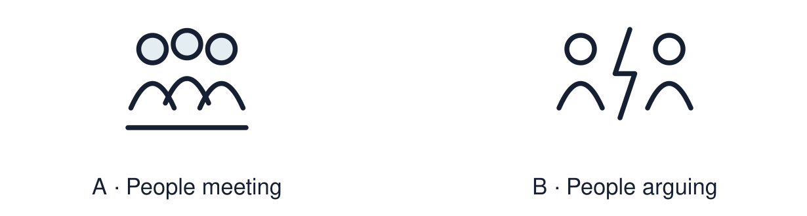

Arrival choices
Previous lesson reminder:

Start with 1 and 2. Try 3 and 4 when ready. Reading and exact scribing are available.
1 Define “authority” in RE.
Support: Use the reminder strip or talk it through with an adult.
2 Which meaning fits shared value?
Support: Choose: Something people of different worldviews agree is important OR When people are safe and conflicts are settled without violence.
3 Name one value shared across two worldviews.
Support: Use the model evidence anchor B, C or read one relevant card together.
4 Is the Day of Peace only for religious people?
Support: Give a reason when ready.
Stretch: use a precise example or explain which detail supports your answer.
Evidence cards
Read, point or listen. Keep the source label with any detail you use.
A The Day of Peace
The United Nations International Day of Peace is held on 21 September each year. It invites everyone, of any worldview, to act for peace.
Source: Authored summary of the United Nations observance
Limit: A day of peace does not end conflict. It asks people to act.
B A Christian example
Jesus taught “Blessed are the peacemakers”. Fictional case: a church runs a mediation group for neighbours in dispute.
Source: Authored summary; Matthew 5:9
Limit: Belief and practice vary between individuals and communities.
C A Muslim example
The greeting “As-salamu alaykum” means “peace be upon you”. Fictional case: a mosque hosts an open day so neighbours can meet.
Source: Authored RE summary
Limit: Belief and practice vary between individuals and communities.
D A Humanist example
Humanists argue that peace comes through reason, dialogue and human rights. Fictional case: a Humanist group runs a schools debate on resolving conflict.
Source: Authored RE summary
Limit: Belief and practice vary between individuals and communities.
Shared investigation
1. Inspect each example, then name the value behind the action.
2. Trace symbol → meaning → value for one example.
Work with a partner or adult, or use your own table. One person suggests; the other checks the evidence. Swap after one turn. Passing is allowed.
Move or match the cards
| Cards to use |
|---|
| A debate on resolving conflict |
| An open day so neighbours can meet |
| A mediation group for neighbours |
Possible labels: Dialogue / Reconciliation / Welcome and understanding
Support: Use the glossary and one chunk of evidence. Plan the claim and supporting detail before explaining.
Further challenge: Explain why a shared value can unite people who disagree about belief.
Supported independent task
Complete this route only. Explain how a festival or shared value can bring people together and identify one value linked to peace.
1. Choose one value from the word bank.
2. Draw or label one action that shows it.
3. Say how the action builds peace.
Support: Use the glossary and one chunk of evidence. Plan the claim and supporting detail before explaining. Complete the organiser one space at a time. The value of ___ can lead to ___. This builds peace because ___.
An adult may read or scribe your exact response. They should not choose the answer.
Standard independent task
Complete this route only. Explain how a festival or shared value can bring people together and identify one value linked to peace.
1. Create a “Peace in Practice” response.
2. Link one value to one real-life action.
3. Explain how it brings people together.
Support: The value of ___ can lead to ___. This builds peace because ___.
Check the required evidence and revise one detail.
Stretch independent task
Complete this route only. Explain how a festival or shared value can bring people together and identify one value linked to peace.
1. Link one value to actions from two worldviews.
2. Explain the different reasons behind the same value.
3. Judge which action would do most in your community, with a reason.
Support: Choose the evidence independently. Use the frame only if it helps.
Explain why a shared value can unite people who disagree about belief.
Exit ticket
Choose a response mode. You may give your answers privately to an adult.
Name one value shared across two worldviews.
Is the Day of Peace only for religious people?
Support: The value of ___ can lead to ___. This builds peace because ___.
Further challenge: Explain why a shared value can unite people who disagree about belief.